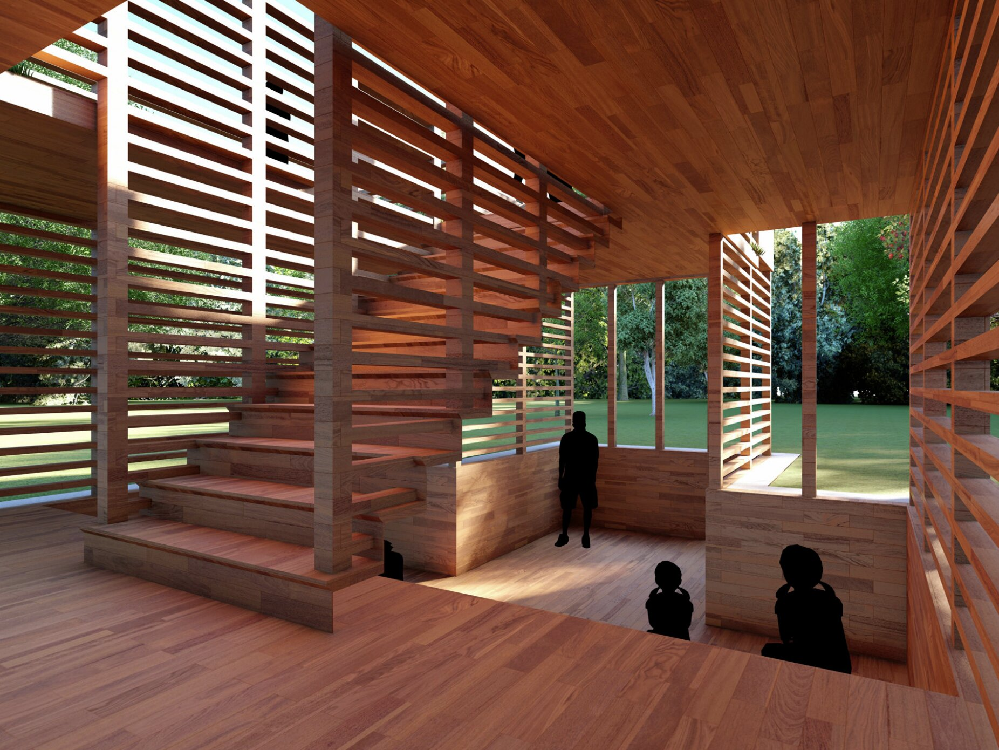
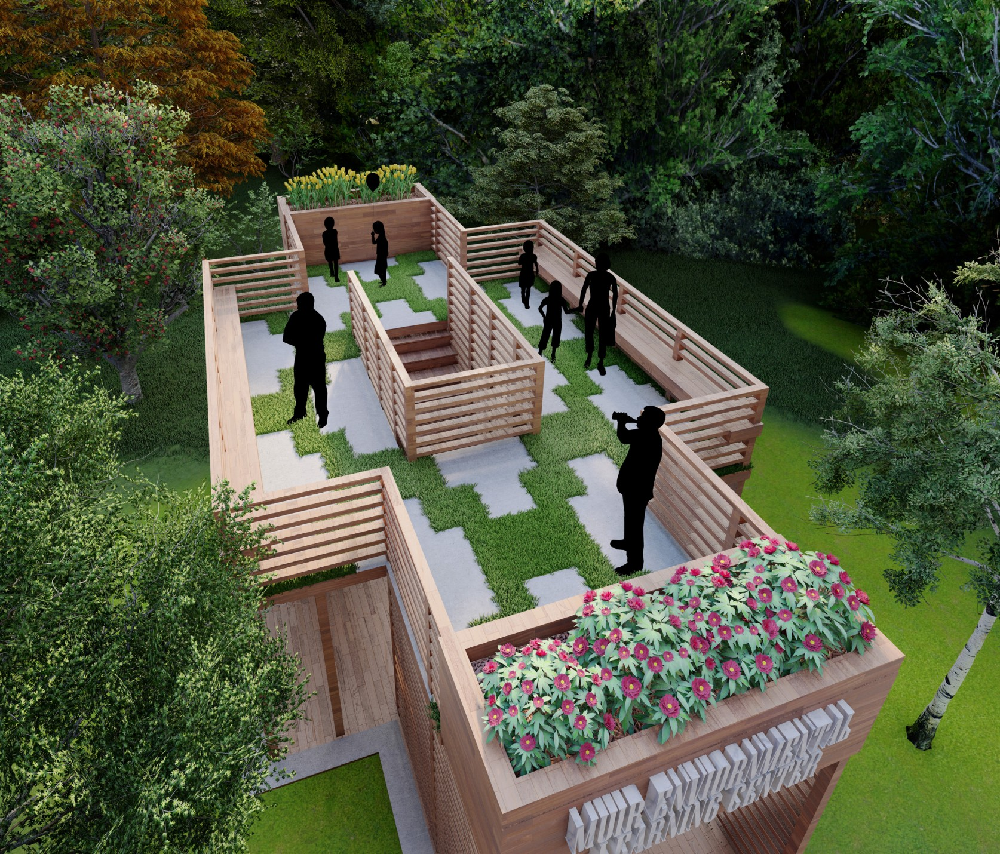
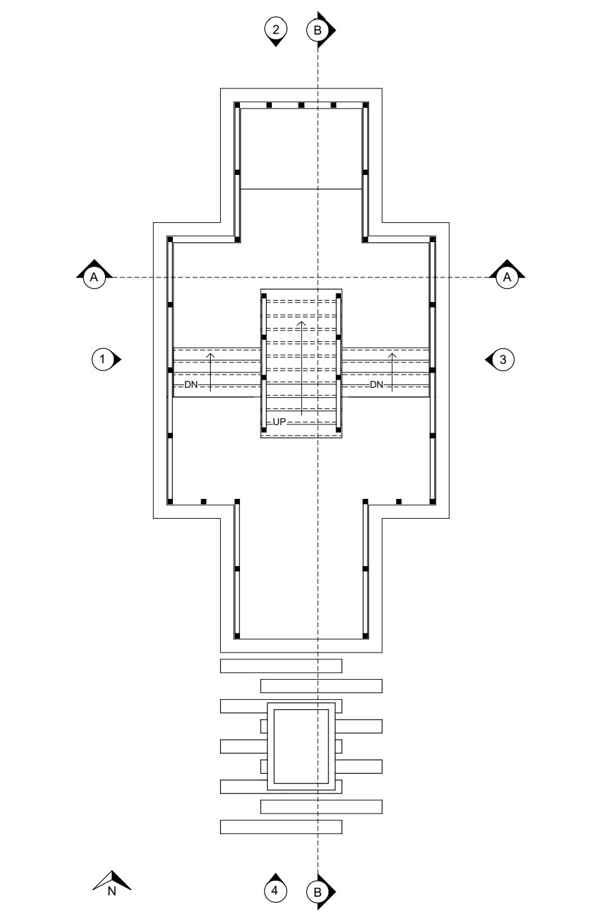
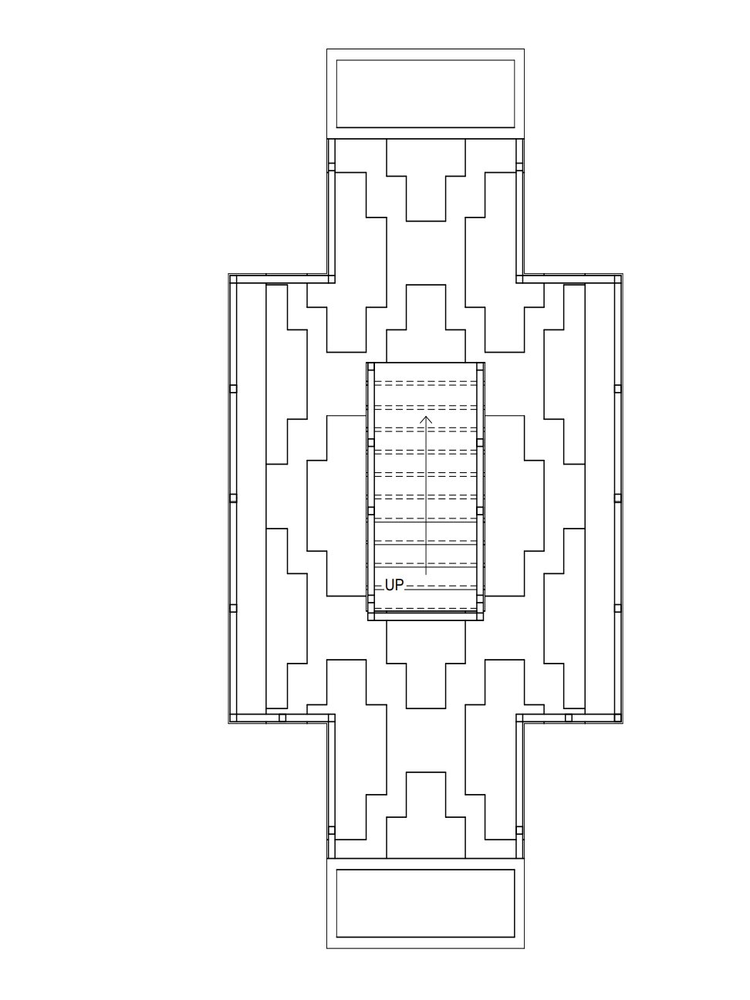

Muir Environmental Learning Center
Named in honor of the influential naturalist
and environmental advocate John Muir, the Muir
Environmental Learning Center is envisioned as a
space where curiosity, reflection, and awareness of
the natural world come together in a meaningful
way. Rather than functioning simply as a building,
it acts as an intermediary between people and the
environment around them, offering a dedicated place
to engage with ideas about ecology, sustainability,
and our role within larger natural systems. The
Center is designed to create an atmosphere of calm
exploration, inviting visitors to slow down, observe,
and develop a deeper appreciation for the landscapes
that define their everyday experience.
The interior and exterior spaces work
together to support a flexible range of activities,
making the Learning Center adaptable to different
users and evolving environmental conversations.
It can serve as a space for independent educators,
school programs, informal workshops, guided
environmental experiences, or quiet personal
exploration. The pavilion encourages learning not
only through structured programming but also
through atmosphere. It becomes a place where
learning is not confined to lecture or display but is
instead embedded in the very experience of being
there.
Ultimately, the Muir Environmental
Learning Center stands as both a physical structure
and a conceptual platform. It embodies the idea
that architecture can meaningfully participate in
environmental advocacy by shaping how people
interact with the natural world.
Renders
Exterior Render 01


Interior Render 01, Exterior Render 02
Drawings


Floor Plan 01, Floor Plan 02
Elevations 01-04